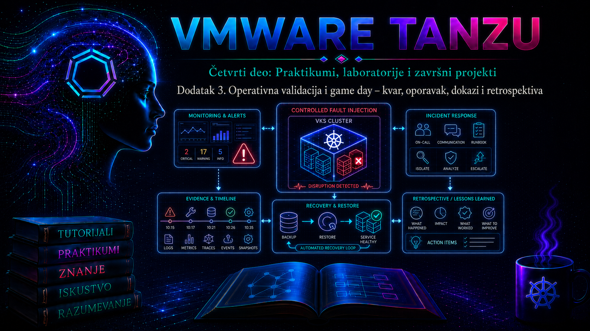

VMware & Tanzu

1. Svrha završne laboratorije
Ovaj dodatak pretvara laboratorijsko okruženje i bezbednu enterprise aplikaciju iz prethodna dva dodatka u proverljiv operativni sistem. Cilj nije da administrator dokaže da ume da izazove kvar, već da tim pod kontrolisanim uslovima pokaže da može da prepozna degradaciju, utvrdi obim i poslovnu posledicu, sačuva dokaze, oporavi uslugu u dogovorenom vremenu i iz nalaza izvede trajne korektivne mere. Game day je zato planirana vežba otpornosti i incident response-a, a ne nekontrolisan test izdržljivosti infrastrukture.
Vežba obuhvata slojeve koje operator zaista mora da koreliše: vSphere i Supervisor, VKS klaster, Kubernetes workload, mrežu i load balancer, persistent storage, identitet, monitoring i backup. Jedan zeleni ekran nije dokaz zdravlja. Uspešna validacija povezuje tehničke signale sa spoljašnjim korisničkim testom, vremenom oporavka, integritetom podataka i audit tragom.
2. Pravila bezbednog game day-a
| Kontrola | Obavezna odluka ili dokaz | Razlog |
|---|---|---|
| Opseg | Tačno imenovani vCenter, Supervisor Namespace, VKS klaster, namespace aplikacije i testni podaci | Sprečava delovanje u pogrešnom kontekstu. |
| Vlasništvo | Voditelj, izvršilac, posmatrač/dokazničar, vlasnik aplikacije i osoba sa pravom prekida | Razdvaja izvršenje, verifikaciju i odluku o zaustavljanju. |
| Dozvoljeni udar | Jedan definisan fault injection u datom trenutku; bez istovremenog gubitka više failure domena | Čuva uzročnost i sprečava nekontrolisanu eskalaciju. |
| Stop uslovi | Gubitak podataka, uticaj izvan laboratorije, prekoračen prag nedostupnosti ili nemoguć rollback | Vežba se prekida pre nego što postane stvarni incident. |
| Recovery budžet | Ciljni RTO, RPO i maksimalno vreme za workaround | Omogućava objektivnu ocenu. |
| Dokazi | UTC vremenska linija, komande, događaji, alarmi, metrike, logovi, promene i korisnički test | Omogućava rekonstrukciju i proveru zaključka. |
U produkciji se fault injection izvodi samo kroz odobren change, uz proveru maintenance prozora, zavisnih servisa, podrške proizvođača i plana komunikacije. Ova lekcija koristi laboratorijske, reverzibilne simulacije. Isključivanje Supervisor control plane VM-ova, ručno menjanje njihovog hardvera ili direktno manipulisanje internim komponentama nije prihvatljiva vežba. Supervisor je proizvodom upravljan sistem; za duboke intervencije koriste se dokumentovani postupci i Broadcom Support.
3. Plan testa, SLO, RTO i RPO
Pre prvog kvara definišite šta znači „usluga radi”. Laboratorijski SLO može zahtevati najmanje 99% uspešnih HTTP zahteva u petominutnom prozoru, p95 odziv ispod dve sekunde, očuvan write/read ciklus i dostupan Kubernetes API. RTO se meri od potvrđenog početka prekida do ponovne stabilne isporuke usluge, a RPO kao najstarija tačka na koju se podaci moraju vratiti. Backup koji postoji, ali nije uspešno vraćen i funkcionalno proveren, nije dokaz ostvarivog RPO-a.
| Scenario | Očekivana zaštita | Cilj laboratorije | Kriterijum uspeha |
|---|---|---|---|
| Brisanje aplikacionog Pod-a | Deployment/ReplicaSet i readiness probe | RTO ≤ 2 min; RPO 0 | Novi Pod Ready; servis i write/read test uspešni. |
| Voluntary disruption worker čvora | Replike, topology spread i PDB | Bez potpunog prekida; drain kontrolisan | Podovi preseljeni, PDB poštovan, čvor vraćen Ready. |
| Storage degradacija | CSI, storage politika, backup i runbook | Jasna detekcija i recovery grana | PVC/volume zdrav; integritet podataka potvrđen. |
| Nedostupan VKS API/VIP | HA control plane, LB, mrežni i DNS monitoring | Uzrok lokalizovan bez nasumičnih restartovanja | VIP:6443 i API stabilni; uzrok dokumentovan. |
| Logički gubitak objekta | Velero ili podržano enterprise backup rešenje | RPO prema poslednjem uspešnom backupu | Resursi i podaci vraćeni i funkcionalno provereni. |
4. Topologija, uloge i preduslovi
- vCenter Server i omogućen, zdrav Supervisor;
- VKS klaster sa najmanje tri worker čvora; za ozbiljan HA test preporučen je višestruki control plane;
- namespace
secure-app, najmanje tri replike aplikacije, Service/Ingress, probe i testni PVC; - jasno imenovani Supervisor i VKS kubeconfig konteksti; najmanje privilegije za posmatranje i posebno odobrene privilegije za fault injection;
kubectlkompatibilan sa serverom, vSphere Client, HTTP alat, PowerCLI po potrebi, monitoring i centralni log sistem;- uspešan, vremenski označen backup i dokumentovan restore; kredencijali za backup storage nisu u manifestima ni zapisniku;
- sinhronizovan NTP/DNS i UTC za dokaze;
- odobren rollback i potvrda da su objekti i podaci isključivo laboratorijski.
delete, drain, cordon, uncordon, skaliranje i restore menjaju stanje. Pre njih proverite aktivni kontekst, namespace i identitet. Primeri koriste promenljive radi čitljivosti; u stvarnoj vežbi svaku vrednost eksplicitno proverite.
5. Dokazni paket i bazna linija
Prvo otvorite direktorijum incidenta sa read-only izlazima. Ne čuvajte tokene, kubeconfig, Secret sadržaj niti dump-ove sa ličnim podacima. Komande se izvršavaju sa administratorske radne stanice u VKS kontekstu i ne menjaju stanje.
export LAB_CONTEXT='vks-lab'
export APP_NS='secure-app'
export EVIDENCE_DIR="gameday-$(date -u +%Y%m%dT%H%M%SZ)"
mkdir -p "$EVIDENCE_DIR"
kubectl config current-context | tee "$EVIDENCE_DIR/00-context.txt"
kubectl auth whoami 2>&1 | tee "$EVIDENCE_DIR/01-identity.txt"
kubectl --context "$LAB_CONTEXT" cluster-info | tee "$EVIDENCE_DIR/02-cluster-info.txt"
kubectl --context "$LAB_CONTEXT" get nodes -o wide | tee "$EVIDENCE_DIR/03-nodes.txt"
kubectl --context "$LAB_CONTEXT" get pods -A -o wide | tee "$EVIDENCE_DIR/04-pods.txt"
kubectl --context "$LAB_CONTEXT" -n "$APP_NS" get deploy,sts,ds,svc,ingress,pdb,pvc -o wide | tee "$EVIDENCE_DIR/05-app-objects.txt"
kubectl --context "$LAB_CONTEXT" -n "$APP_NS" get events --sort-by=.metadata.creationTimestamp | tail -n 100 | tee "$EVIDENCE_DIR/06-events-before.txt"
Ako kubectl auth whoami nije podržan, koristite read-only kubectl auth can-i --list -n secure-app i zabeležite kubectl version. Events imaju ograničenu retenciju i nisu trajni audit zapis, pa se ključni događaji izvoze odmah i korelišu sa centralnim logovima i vCenter Events/Tasks prikazom.
export APP_URL='https://secure-app.lab.example'
date -u +%FT%TZ | tee "$EVIDENCE_DIR/07-baseline-time.txt"
curl --fail --silent --show-error --connect-timeout 3 --max-time 10 -o /dev/null -w 'http=%{http_code} total=%{time_total}
' "$APP_URL/healthz" | tee "$EVIDENCE_DIR/08-http-baseline.txt"
# Prilagoditi API-ju aplikacije; koristiti samo sintetički laboratorijski podatak.
MARKER="gameday-$(date -u +%s)"
curl --fail --silent --show-error -X POST "$APP_URL/api/records" -H 'Content-Type: application/json' --data "{\"marker\":\"$MARKER\"}" | tee "$EVIDENCE_DIR/09-write-marker.json"
curl --fail --silent --show-error "$APP_URL/api/records/$MARKER" | tee "$EVIDENCE_DIR/10-read-marker.json"
Očekivani rezultat je zdrav klaster, svi zahtevani workload-i Ready, PVC Bound, uspešan HTTP status i pročitan isti marker. Ako bazna linija nije zdrava, game day se ne započinje: postojeći kvar bi onemogućio pripisivanje posledica planiranoj promeni.
6. Vežba 1 – samoisceljenje posle gubitka Pod-a
Cilj: dokazati da deklarativni kontroler vraća repliku i da Service šalje saobraćaj samo Ready endpoint-ima. Rizik je nizak ako postoje tri replike i ispravne probe.
- U prvom terminalu pokrenite read-only posmatranje:
kubectl --context "$LAB_CONTEXT" -n "$APP_NS" get pods -w. - U drugom izaberite Pod, proverite njegovog vlasnika, zabeležite vreme i obrišite samo taj Pod. Poslednja komanda menja stanje.
POD_NAME=$(kubectl --context "$LAB_CONTEXT" -n "$APP_NS" get pods -l app=secure-app -o jsonpath='{.items[0].metadata.name}')
kubectl --context "$LAB_CONTEXT" -n "$APP_NS" get pod "$POD_NAME" -o jsonpath='{.metadata.ownerReferences[0].kind}{"/"}{.metadata.ownerReferences[0].name}{"
"}'
date -u +%FT%TZ | tee "$EVIDENCE_DIR/11-pod-fault-start.txt"
kubectl --context "$LAB_CONTEXT" -n "$APP_NS" delete pod "$POD_NAME"- Tokom zamene šaljite health zahteve, pa proverite rollout, endpoint-e i događaje.
for i in $(seq 1 30); do
date -u +%FT%TZ
curl --silent --output /dev/null --write-out 'http=%{http_code} total=%{time_total}
' --max-time 5 "$APP_URL/healthz" || true
sleep 2
done | tee "$EVIDENCE_DIR/12-http-during-pod-loss.txt"
kubectl --context "$LAB_CONTEXT" -n "$APP_NS" rollout status deployment/secure-app --timeout=180s
kubectl --context "$LAB_CONTEXT" -n "$APP_NS" get pods -l app=secure-app -o wide
kubectl --context "$LAB_CONTEXT" -n "$APP_NS" get endpointslice -l kubernetes.io/service-name=secure-app
kubectl --context "$LAB_CONTEXT" -n "$APP_NS" get events --sort-by=.metadata.creationTimestamp | tail -n 50
Ako je novi Pod Pending, proverite Events zbog kapaciteta, affinity pravila, image-a ili volumena. Ako je Running, ali nije Ready, koristite kubectl describe pod, kubectl logs POD -c CONTAINER --previous i proveru probe konfiguracije. Ne povećavajte timeout dok uzrok nije potvrđen.
Rollback: kontroler je već vratio željeno stanje. Ako test otkrije lošu novu verziju, odobrena komanda kubectl rollout undo deployment/secure-app vraća prethodnu poznato dobru reviziju; zatim se ponavljaju rollout i funkcionalna validacija.
7. Vežba 2 – kontrolisani prekid worker čvora
Ova vežba simulira održavanje, ne fizički kvar. PodDisruptionBudget ograničava dobrovoljne eviction-e tokom drain, ali ne sprečava kvar čvora i ne obezbeđuje replike, kapacitet ni raspored po failure domenima.
kubectl --context "$LAB_CONTEXT" get nodes -l '!node-role.kubernetes.io/control-plane' -o wide
kubectl --context "$LAB_CONTEXT" -n "$APP_NS" get deploy secure-app
kubectl --context "$LAB_CONTEXT" -n "$APP_NS" get pdb -o wide
kubectl --context "$LAB_CONTEXT" -n "$APP_NS" get pods -l app=secure-app -o custom-columns=NAME:.metadata.name,NODE:.spec.nodeName,READY:.status.containerStatuses[*].ready
Ako PDB ne postoji, uvedite ga kroz GitOps ili, samo u laboratoriji, sledećim manifestom. minAvailable: 2 pretpostavlja tri replike. PDB koji zahteva 100% dostupnost može namerno blokirati svaki drain.
apiVersion: policy/v1
kind: PodDisruptionBudget
metadata:
name: secure-app-pdb
namespace: secure-app
spec:
minAvailable: 2
selector:
matchLabels:
app: secure-app
cordon i drain menjaju stanje. Ne koristite rutinski --disable-eviction, jer zaobilazi PDB. --delete-emptydir-data prihvata gubitak lokalnih emptyDir podataka i dozvoljen je samo kada je to planom prihvaćeno; --force nije podrazumevana prečica.
export TEST_NODE='vks-worker-name'
date -u +%FT%TZ | tee "$EVIDENCE_DIR/13-drain-start.txt"
kubectl --context "$LAB_CONTEXT" cordon "$TEST_NODE"
kubectl --context "$LAB_CONTEXT" drain "$TEST_NODE" --ignore-daemonsets --delete-emptydir-data --timeout=10m
kubectl --context "$LAB_CONTEXT" -n "$APP_NS" get pdb,pods -o wide
curl --fail --silent --show-error "$APP_URL/healthz"
# State-changing rollback.
kubectl --context "$LAB_CONTEXT" uncordon "$TEST_NODE"
kubectl --context "$LAB_CONTEXT" wait --for=condition=Ready "node/$TEST_NODE" --timeout=5m
Tokom drain-a pratite PDB ALLOWED DISRUPTIONS, preseljenje Pod-ova, HTTP probe i scheduler događaje. Blokiran drain je nalaz: uzrok može biti prestrog PDB, unmanaged Pod, nedovoljan kapacitet, lokalni storage ili topology/affinity pravilo. Ne brišite zaštitu samo da bi test „prošao”. Kriterijum završetka je uspešan ili dokazivo kontrolisano blokiran drain, usluga u SLO-u, Ready i schedulable vraćen čvor i sve Ready replike.
8. Vežba 3 – storage degradacija bez prekidanja infrastrukture
Namerno odspajanje produkcionog volumena, gašenje datastore-a ili menjanje CSI internih objekata nije bezbedna početna vežba. Bezbednija simulacija je canary PVC sa nevažećim testnim StorageClass-om. Tako se dobija realan Pending bez ugrožavanja postojećih podataka, a operator prati lanac Pod → PVC → PV → StorageClass → CSI događaj → vSphere storage politika/datastore.
apiVersion: v1
kind: PersistentVolumeClaim
metadata:
name: gameday-unbound-pvc
namespace: secure-app
labels:
exercise: gameday-storage
spec:
accessModes:
- ReadWriteOnce
resources:
requests:
storage: 1Gi
storageClassName: intentionally-missing-lab-classkubectl --context "$LAB_CONTEXT" apply -f gameday-unbound-pvc.yaml
kubectl --context "$LAB_CONTEXT" -n "$APP_NS" get pvc gameday-unbound-pvc -w
kubectl --context "$LAB_CONTEXT" -n "$APP_NS" describe pvc gameday-unbound-pvc | tee "$EVIDENCE_DIR/14-storage-pvc-describe.txt"
kubectl --context "$LAB_CONTEXT" get storageclass
kubectl --context "$LAB_CONTEXT" -n "$APP_NS" get events --sort-by=.metadata.creationTimestamp | tail -n 50
# Rollback fault-a.
kubectl --context "$LAB_CONTEXT" -n "$APP_NS" delete pvc gameday-unbound-pvc
Očekuje se Pending PVC sa događajem da StorageClass ne postoji. U stvarnom incidentu proveravaju se dozvoljene storage politike u Supervisor Namespace-u, kompatibilan datastore, kapacitet, CSI controller/node Pod-ovi i attach/mount događaji. Bound ne dokazuje da je filesystem montiran niti da aplikacija čita podatke; završna validacija je write/read marker. Brisanje stvarnog PVC-a nije troubleshooting korak, a reclaim politika mora biti poznata pre destruktivne radnje.
9. Vežba 4 – nedostupan VKS API i VIP
Scenario se izvodi kao tabletop ili uz odobrenu, reverzibilnu mrežnu simulaciju izvan platforme. Ne menjajte load balancer, NSX pravila ili control plane VM-ove radi demonstracije. kubectl timeout se razdvaja na klijent/kredencijal, DNS, rutu/firewall, VIP/load balancer i kube-apiserver/etcd.
kubectl config current-context
kubectl config view --minify -o jsonpath='{.clusters[0].cluster.server}{"
"}'
getent hosts vks-api.lab.example
curl --connect-timeout 5 --max-time 10 -vk https://vks-api.lab.example:6443/readyz
kubectl --request-timeout=10s get --raw='/readyz?verbose'| Simptom | Najmanje invazivan dokaz | Verovatna grana | Bezbedna akcija |
|---|---|---|---|
| DNS ime se ne razrešava | getent hosts, DNS monitoring i poslednje izmene | DNS zapis, resolver ili put do DNS-a | Vratiti odobren zapis/putanju; ne menjati kubeconfig kao trajno rešenje. |
| VIP:6443 timeout, control plane IP dostupan | LB pool/health, ruta, firewall, događaji | Load balancer/VIP putanja | Ispraviti LB/routing policy kroz vlasnički tim. |
| TLS postoji, API vraća 401/403 | kubectl auth can-i, vreme i identitet | Kredencijal, RBAC ili vreme | Obnoviti podržani kubeconfig/token; ne davati cluster-admin kao prečicu. |
| VIP i čvor dostupni, API nije Ready | Cluster/Machine conditions, bundle, apiserver/etcd signal | Control plane ili etcd | Eskalirati po verzijski tačnom runbook-u/KB-u; bundle pre intervencije. |
Broadcom KB postupci proveravaju da li Supervisor vidi control-plane Service/endpoints, može li da dostigne VIP i pojedinačne control plane IP adrese na TCP 6443 i da li su kube-apiserver i etcd zdravi. SSH na Supervisor/VKS control plane, crictl, tcpdump i interni logovi nisu početni korak: zahtevaju dokumentovan pristup, privilegije, verzijski tačan KB i često podršku. Ako control-plane endpoint-i nedostaju ili su netačni, ne popravljajte ih ručno.
10. Vežba 5 – backup i izolovani restore
Primer koristi Velero, ali on nije automatski instaliran niti jedina podržana opcija za svako VKS izdanje. Plugin, object storage, snapshot i CSI/FS backup moraju odgovarati verziji i storage platformi. Supervisor, vCenter, mrežna infrastruktura i workload podaci nisu jedan backup domen; svaki ima svoj podržani postupak i redosled oporavka.
velero version
velero backup-location get
velero backup get
velero backup describe secure-app-pre-gameday --details
velero backup logs secure-app-pre-gameday | tail -n 100Ako backup tek treba napraviti, sledeća state-changing komanda kreira Backup objekat i podatke u backup lokaciji. Uključivanje sadržaja volumena zavisi od plugin-a i politike; PVC objekat i podaci na volumenu nisu isto.
velero backup create secure-app-pre-gameday --include-namespaces secure-app --wait
velero backup describe secure-app-pre-gameday --detailsNajbezbedniji restore test ne briše izvorni namespace, već vraća podržani skup u izolovani namespace. Remapping nije dovoljan za hard-coded namespace reference, cluster-scoped objekte, spoljne baze, certifikate ili DNS. Koristite namenski testni skup.
velero restore create secure-app-restore-test --from-backup secure-app-pre-gameday --namespace-mappings secure-app:secure-app-restore-test --wait
velero restore describe secure-app-restore-test --details
velero restore logs secure-app-restore-test | tail -n 100
kubectl --context "$LAB_CONTEXT" -n secure-app-restore-test get all,pvc
kubectl --context "$LAB_CONTEXT" -n secure-app-restore-test get events --sort-by=.metadata.creationTimestamp | tail -n 50
kubectl --context "$LAB_CONTEXT" -n secure-app-restore-test wait --for=condition=Available deployment/secure-app --timeout=10m
kubectl --context "$LAB_CONTEXT" -n secure-app-restore-test port-forward service/secure-app 18080:80
Status Completed nije završni dokaz. Proverite Ready workload-e, montiran PVC, marker, konzistentnost i funkciju kroz izolovani endpoint. Delimičan restore se ne proglašava uspešnim bez procene warning/error stavki. RTO traje do funkcionalne validacije, ne samo do završetka Velero kontrolera.
Rollback/čišćenje: posle izvoza dokaza proverite tačna imena, pa obrišite samo testni namespace i Restore objekat. Ne brišite izvorni namespace ni backup.
kubectl --context "$LAB_CONTEXT" delete namespace secure-app-restore-test
velero restore delete secure-app-restore-test --confirm11. Korelacija događaja, metrika i logova
| Sloj | Dokaz i pristup | Traženi signal | Korelacija |
|---|---|---|---|
| Korisnik/aplikacija | HTTP test, aplikacioni log, trace ID | Prvi neuspeh, status, latencija, poslednji write | Pod restart, endpoint ili storage greška. |
| Kubernetes workload | get/describe, Events, probe, container log | Scheduling, eviction, pull, mount, OOM, readiness | Node conditions, CSI i Deployment promena. |
| VKS lifecycle | Cluster/Machine/MachineDeployment conditions u Supervisor kontekstu | Ready, Provisioning, reconciliation | vCenter task, image, resursi i mreža. |
| vSphere/Supervisor | Events, Tasks, Alarms, Health/support bundle | Host, datastore, VM, WCP/Supervisor događaj | UTC sa Kubernetes događajem. |
| Mreža/LB/DNS | Pool health, firewall/flow log, DNS, TCP proba | Timeout, reset, backend, DNS/MTU/routing | VIP i control plane endpoint-i. |
| Storage/backup | CSI Events, PVC/PV, datastore alarm, backup/restore log | Provision, attach, mount, snapshot, partial failure | Pod i integritet podataka. |
| Bezbednost | Kubernetes audit, vCenter task/audit, IdP, SIEM | Ko, kada, objekat, akcija, rezultat | Change i komandni dnevnik bez tajni. |
Prikupljajte uzak prozor, na primer petnaest minuta pre i trideset minuta posle fault-a, uz isti vremenski standard. Support bundle uzmite pre restartovanja kada stanje dozvoljava. Veliki bundle, packet capture ili povećanje nivoa logovanja može opteretiti sistem i zahteva procenu rizika.
12. Incident zapis: od simptoma do trajne korekcije
| Polje | Primer |
|---|---|
| Simptom | HTTP 503 od 10:14:22 UTC; Kubernetes API dostupan. |
| Obim i posledica | Samo secure-app; read/write neuspešan 48 s. |
| Neposredni uzrok | Poslednja Ready replika uklonjena iz EndpointSlice-a. |
| Osnovni uzrok | Sve replike bile na istom worker čvoru zbog nedostajućeg topology spread pravila. |
| Privremeno rešenje | Vraćen čvor i potvrđen rollout. |
| Trajna mera | Topology spread/anti-affinity, PDB i alert na broj dostupnih replika. |
| Dokaz oporavka | 30 uzastopnih HTTP 200, marker write/read, tri Ready replike na različitim čvorovima. |
| Vlasnik i rok | Platform tim; change i ponovni test do definisanog datuma. |
Osnovni uzrok nije isto što i poslednja greška u logu. Tim postavlja hipotezu, definiše dokaz koji je potvrđuje ili obara i bira najmanje invazivnu proveru. Retrospektiva je blameless: proučava uslove sistema, odluke i zaštitne mehanizme, a ne traži osobu kojoj će pripisati krivicu.
13. Retrospektiva i ocena
- Šta je monitoring otkrio pre korisničke prijave, a šta nije?
- Da li su alert, runbook i stvarni nazivi/putanje bili usklađeni?
- Koji dokaz je najbrže suzio failure domain, a koji je bio šum?
- Da li su RTO i RPO ostvareni i od kog događaja su mereni?
- Da li je automatizacija smanjila vreme ili prikrila neuspeh?
- Koja privilegija je bila preširoka, a koja je nedostajala?
- Koja zavisnost nema redundansu: DNS, NTP, LB, datastore, registry, IdP ili backup lokacija?
- Da li svaka mera ima vlasnika, prioritet, rok i ponovni dokazni test?
Ocena nije samo „prošao/pao” prema RTO-u. Usluga može biti brzo vraćena bez audit traga, ili restore završen bez konzistentnih podataka. Vežba se zatvara tek kada su dokazi sačuvani, privremene promene uklonjene, akcije evidentirane i zakazan ponovni test kritičnih korekcija.
14. Administratorske prakse
- Pre komande proveri kontekst, namespace, identitet i da li je operacija read-only ili state-changing.
- Ne izazivaj drugi kvar dok prvi nije oporavljen, validiran i vremenski zatvoren.
- Prvo sačuvaj stanje, događaje i poslednje promene; tek zatim menjaj sistem.
- Validiraj od korisnika ka infrastrukturi i nazad ka korisniku.
- Ne poistovećuj manifest, PV/PVC, snapshot i aplikacionu konzistentnost.
- Ne zaobilazi PDB, RBAC, change kontrolu ili podržani lifecycle da bi vežba završila brže.
- Čuvaj paket bez tokena, Secret vrednosti i nepotrebnih ličnih podataka; definiši retention i pristup.
- Trajnu meru pretvori u konfiguraciju, alert, automatizovani test ili proverljiv runbook.
15. Završna kontrolna tačka
Administrator je završio laboratoriju tek kada može dokazivo da:
- definiše blast radius, stop uslove, SLO, RTO, RPO, uloge i rollback;
- prikupi baznu liniju i koreliše aplikacione, Kubernetes, vSphere, mrežne, storage i audit dokaze;
- izvede kontrolisani gubitak Pod-a i voluntary disruption worker čvora;
- objasni granice PDB-a, replika, topology spread-a i self-healing-a;
- dijagnostikuje PVC/CSI problem i potvrdi integritet write/read testom;
- razdvoji DNS, identitet, VIP/LB, mrežni put i kube-apiserver/etcd granu;
- proveri backup, izvede izolovani restore i izmeri funkcionalni RTO/RPO;
- razdvoji neposredni i osnovni uzrok, workaround i trajnu meru;
- vrati laboratoriju u početno stanje i zatvori vežbu dokazima, vlasnicima i rokovima.
Zaključak
Operativna spremnost Tanzu platforme ne dokazuje se time što su Supervisor, VKS klaster i aplikacija jednom instalirani. Dokazuje se ponovljivim ponašanjem pod kvarom: zaštite ograničavaju uticaj, observability rano otkriva simptom, operator nalazi failure domain, recovery vraća servis i podatke, a vremenska linija omogućava proveru. Najvažniji proizvod game day-a nije samo oporavljena aplikacija, već pouzdaniji sistem: precizniji alarm, bolji raspored replika, potvrđen backup, kraći runbook i jasnija odgovornost.
Kubernetes može ponovo kreirati Pod, vSphere zaštititi virtuelnu infrastrukturu, a backup alat vratiti objekte i volumene, ali nijedan sloj samostalno ne potvrđuje poslovnu ispravnost. Odgovoran administrator spaja slojeve, čuva dokaze pre intervencije i svaku pretpostavku završava proverom iz perspektive korisnika.